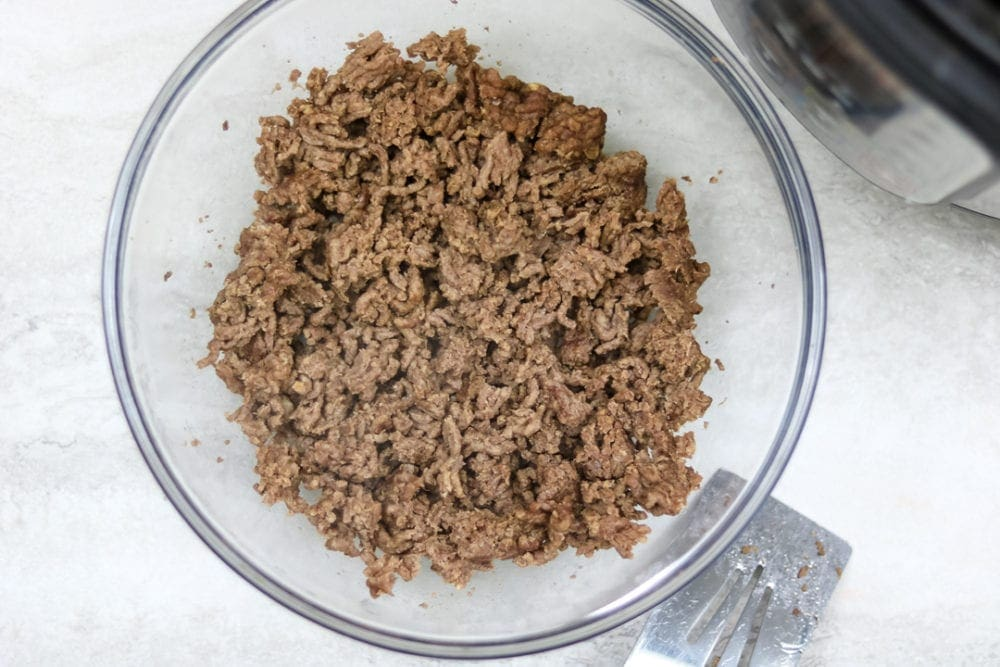

Ground Beef Surprise

Description
This is a meal is simple to prepare and great for keto dieters.
Ingredients
- one pound of ground beef
- salt
- spinach
- crushed red peper
Steps
- Begin to brown ground beef in a skillet.
- Add salt and crushed red pepper while continuing to brown the beef.
- Mix spinach in to prevent constipation.
- Serve and enjoy.
- SUPRISE: This meal is disgusting and not for the faint of heart!